Design for the Time Being is an investigation on the realities proposed by design and designing. As a growing collection of monthly editorials, it seeks to use design as a lens to look at the world, rather than as a mean to an end.
Lead investigator:
Pete Fung Ho Ching
Editor:
Samein Shamsher
Contributor:
Nova Olson
(more to come)
Coded by:
Typhaine Le Gales
Order matters. Palestinian poet Mourid Barghouti writes that if you want to neglect the importance of a certain story, you simply employ the linguistic trick of beginning the story with the word ‘secondly’. In September 2018, Joseph Grima, the creative director of Design Academy Eindhoven— one of the leading voices in contemporary design — gave a speech to the student body on the responsibility of designing design . It was the students job, Grima intoned, to be the avant-garde of design, to find where design is needed next in the interconnected network culture we live in. However, by placing design second, design itself is rendered as a means to an end and the activity, of designing something new by designers is once again, placed at the centre of the stage. [1] The responsibility that Grima refers to here seems to concern the designer’s own position to design, rather than what our designs have done, or what our designs will do.
Words also matter. Salishan language of the First Nations people in the Pacific Northwest of Canada use the English equivalent of in/an for the determiner my/mine. But it is not a straight translation. In/an are not to be used before anything from the natural world, that is in its true essence, everything we do and act upon. For example there is no ‘my land’ or ‘my chair’ or even ‘my uncle’. To the Salish people, in/an are relational terms, rather than indicating fixed ownership and possession. It is a bond, a connection. Every time one invokes in/an , the relationship between the subject and the object is being reconsidered and expressed. The usage of the word, by design, is never static.
American literary critic John Freemen urges us to retain “vigilance about how language is used”. [2] Language shapes values, reinforces the status quo and obstruct the possibility of change. Conversely, language can be used to express new and unexpected relations, make us question expected norms and open up spaces where change becomes not just possible but an expected outcome. What is at stake here, is not merely an issue of representation, framing, referring or categorizing, but one of worldly understanding and the systems by which we come to be . Language shapes our understanding of reality and in turn, reality itself. Today, while many reconciliation efforts are being made by governments around the world, including those between the Canadian and Salish, to return land to indigenous peoples it is important to remember that land was never owned before the settler’s arrival. The idea of ownership was imposed on to indigenous peoples in exchange for their survival. Giving land back is merely a colonial solution to a colonial problem — material logic for relational matters — it is hardly decolonizing.
[Samein Shamsher] While agree with the notion of returning land is a material solution to a relational issue, I am inclined to point out there are many who would take serious issue with this statement given that the repatriation of land and life of indigenous peoples is one of, if not the single most important aspect of decolonization. A certain danger arises when we cross-contaminate notions of decoloniality with other forms of anti-racist organization. While it may be useful to critique the praxis of decolonization, or lack there of, its unnecessarily flippant to suggest that access to and self-governance of Indigenous lands has not been a major catalyst of some of the most significant standoffs of the last fifty years.
Another example we can draw upon involves masks and their usage in Hong Kong over the last two decades. Starting in February 2003, when the dense metropolis discovered its first case of SARS coronavirus before the global outbreak. The city entered a state of emergency and the green surgical mask was introduced as a prevention mechanism. Despite the containment of the transmission later that year, the epidemic sensibilities stayed among Hong Kong citizens and wearing a mask when one is even mildly unwell became a common practice — almost as a new social contract of public engagement.  If you had the misfortune of coughing too visibly or loudly on the metro, you would be on the receiving end of more than a few sharp looks of both concern and consternation.
If you had the misfortune of coughing too visibly or loudly on the metro, you would be on the receiving end of more than a few sharp looks of both concern and consternation.
Fast forward to 2019, the narrative of collectively fighting SARS has been replaced by one of civil disobedience. The ubiquitousness of the artifact, the mask, lends itself to be the prefect disguise against police surveillance during the pro-democracy protest. So much so it became a symbol of the leaderless movement — the thread that runs parallel to this every evolving development; from the eye patched graffitied on billboards; mimicking a journalist blinded by police force; as campaigning for independent investigation of the police brutality;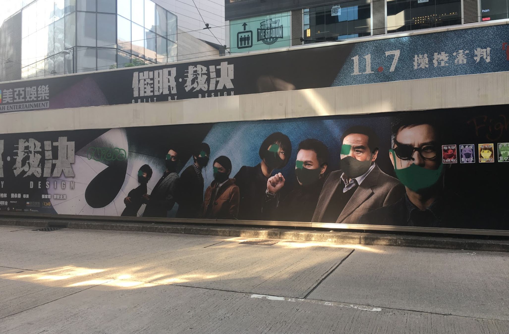 to crowdfunded advertisements on international newspapers  as a continuous effect to draw attention from other world leaders for their support; to the countermeasures of anti-mask laws. What is and isn’t a mask? The hair mask that braids hair in front of one’s face to render one self unrecognizable , the Winnie the Pooh/Xi Junping masks, subverting the power of the single party to its own control.
as a continuous effect to draw attention from other world leaders for their support; to the countermeasures of anti-mask laws. What is and isn’t a mask? The hair mask that braids hair in front of one’s face to render one self unrecognizable , the Winnie the Pooh/Xi Junping masks, subverting the power of the single party to its own control.
Looking through the lens of these democratic yet anonymous actions, the role of design can be considered beyond the material property of the surgical masks, or the aesthetic of the campaigning posters. Design is a double ontology: ‘design designs’ as theorist Anne-Marie Wills writes. Design itself takes on its own design role beyond the designer’s hand. [3] To borrow the Salishan value system again, perhaps we could imagine a world where “my design” does not exist? There is no ‘my object’ or ‘my material’ only design as its own entity. How would we come to understand the profession of design today without ownership or authorship? Would the profession even exist? Could we reclaim what makes designs design and subvert design for more democratic purposes? Or to further the discussion by borrowing Donna Haraway’s quote from Staying with The Trouble, “it matters what knots knot knots, what thoughts think thoughts, what descriptions describe descriptions, what ties tie ties.” [4] In this context, it matters what designs design designs .
- [1] Beyond the New , Hella Jongerius and Louise Schouwenberg, 2018. (Perhaps it is time for Beyond the ‘Beyond the New’?)
- [2] Dictionary of Undoing , John Freenmen, 2019
- [3] Ontological Designing , Anne-Marie Wills, 2006
- [4] Staying with the Trouble , Donna Haraway, 2017
Design occupies every aspect of our lives; and conversely the ‘everyday’ has become synonymous with design: ‘Everyday’ is educated: from Don Norman’s popular book The Design of Everyday Things,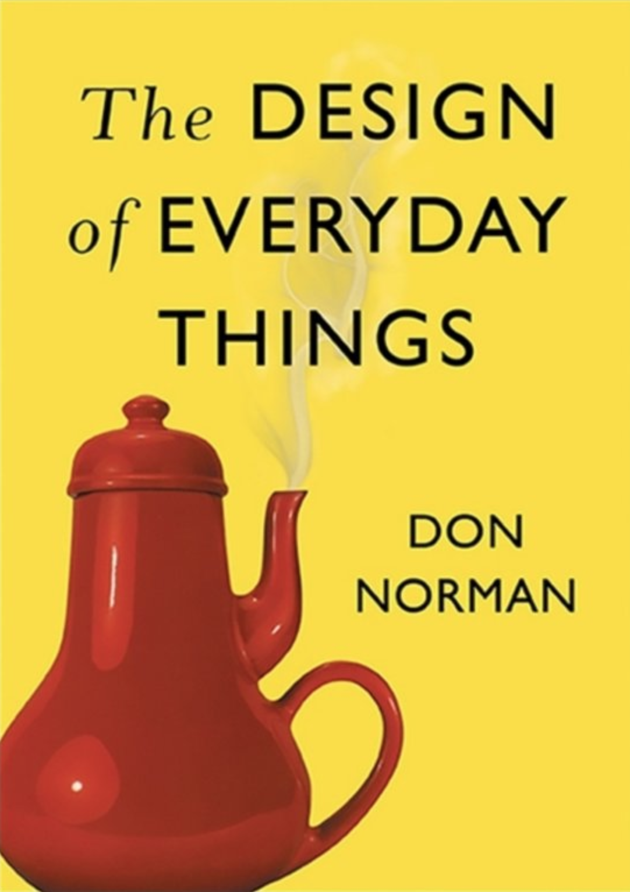 the bible of many design studios over the past decades, to Adam Greenfield’s more recent book Radical Technologies: The Design of Everyday Life 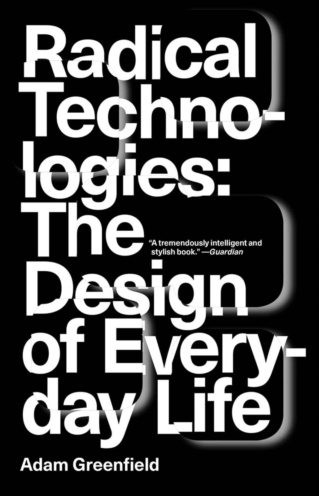,a critical look at how ubiquitous technologies have colonized our lives. ‘Everyday’ is sold: from Tiffany and Co.’s Everyday Object Collection, including a a hand crafted sterling silver tin can 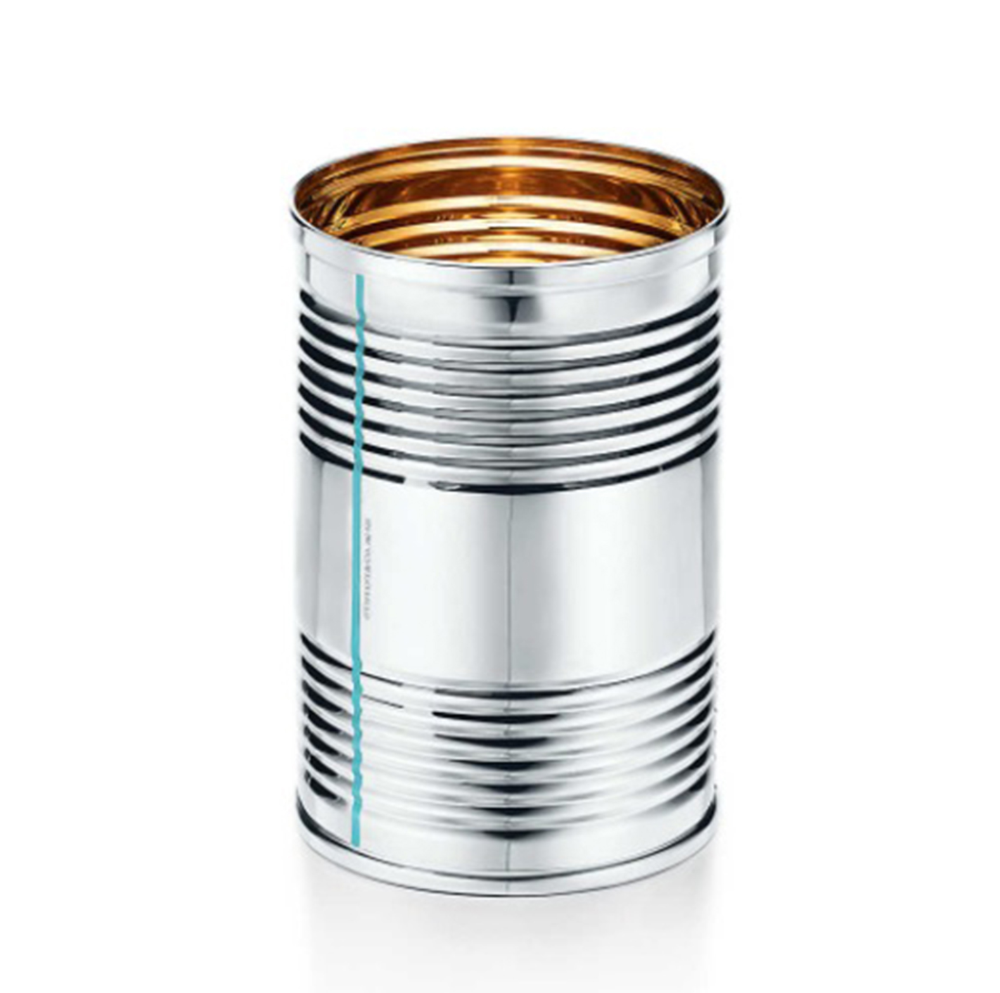, “render[ing] the ordinary extraordinary”, to Nokia releasing its The Amazing Everyday  campaign in 2012 for the LMIA 8000 smartphone, “Who says the everyday has to be so everyday?” they claimed. ‘Everyday’ is also continuously reconstructed: Ward Robert’s photo collection The Beauty of Everyday Life 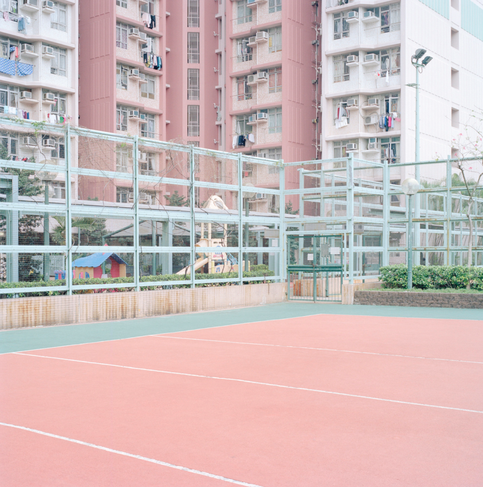 documents public courts in various cities around the world. Curiously, the photos never seem to feature people, marking them as superfluous from such everyday architecture.
campaign in 2012 for the LMIA 8000 smartphone, “Who says the everyday has to be so everyday?” they claimed. ‘Everyday’ is also continuously reconstructed: Ward Robert’s photo collection The Beauty of Everyday Life 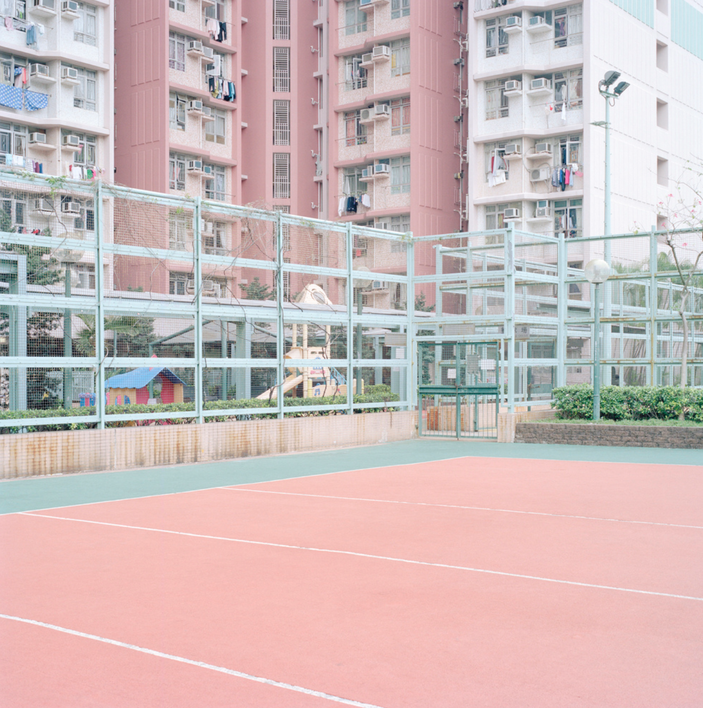 documents public courts in various cities around the world. Curiously, the photos never seem to feature people, marking them as superfluous from such everyday architecture.
What’s clear is that the ‘everyday’ in design, despite being seemingly universal, and following a particular logic, i.e., the ordinary, the mundane, the utilitarian, the normal, is never clearly defined or operationalized. Design being a “projective medium” [1] does not only give form to our surroundings, it also gives space for further imaginations of what is possible. The ‘everyday’ thus becomes an empty vessel of a term that projects the particular belief system and world view of whomever uses it. Consciously or not, it reinforces certain social, cultural, technical or economic values. It is not an issue of representation but one of ideological construction. In this case, the ‘everyday’ perpetuated by design cements the “operational logic whose models may go as far back as the age-old ruses of fishes and insects that disguise or transform themselves in order to survive, and which has in any case been concealed by the form of rationality currently dominant in Western culture.” [2] Whether it is making the mundane fantastical, or the augmentation of the normal, the supposedly different lived experiences are rationalized and flattened by the logic of design.
Throughs this line of thinking, we can establish that the ‘everyday’ in design as a singular narrative, what Sociologist John Law calls the “one-world world: a world that has granted itself the right to assimilate all other worlds and, by presenting itself as exclusive, cancels possibilities for what lies beyond its limits.” [3] Design designed the ‘everyday’. It is only through unpacking positionality of this singular ‘everyday’ (in this case that of the western rational logic one) that we could begin to understand the relations and multitudes of the everyday(s) that exist within our western context (seen or unseen). It is vital for design to begin tackling the question,‘whose everyday?’
- [1] Everyday Object Collection, Tiffany and Co., https://www.tiffany.com/home-designs/shop/everyday-objects/
- [2] Anthropocene Nights, Benedict Singleton, 2012
- [3] The Practice of Everyday Life, Michel de Certeau, 1980
- [4] What’s Wrong with a One-World World , John Law, 2011
A few thoughts on speculative design before and after a short interview with Dunne&Raby at the Porto Design Biennale 2019.
Words matter, especially in design. The theoretical underpinning that goes into using a word next to design can sometimes be overshadowed by the design work itself. Put it another way design make words obsolete. Take the word speculative for example - started off as an alternative critical inquiry two decades ago at Royal College of Art with Designed Interaction - has become synonymous with a particular style and working method today. It is not rare to see titles like speculative this or speculative that yet the subject themselves seems to suggest obscurity more than anything. The word has departed from its critical roots.
Similarly, English culture theorist Mark Fisher talks about the word futuristic that used to actually mean doing something radical, imagining the future. Today in both music and visual culture, it is being used mostly in reference to the futuristic style from the 70s and 80s.
Despite most of us operate in the culture/critical side of design, I think we also need to be careful about the unintended consequence of our work the same way we critique the industry. Think of the design of the highway. Pollution and traffic jam was not on the radar in its inception. I believe that it is time we examine more closely about how our work distributed and consumed.
Pete Fung and Samein Shamsher: You and your work has become synonymous with critical and speculative design (or even maybe merely the word speculative) and it is not rare to see designer using speculative to describe their practice. What are your thoughts or feelings about the way in which the work you have pioneered, so to say, has been carried forward?
Fiona: Difficult.
Anthony: That’s a complicated question.
Anthony: That is a very difficult question. I think we are going to have to be honest and say mixed.
Fiona: Very mixed.
Anthony: I think we are very happy about the role we played, along with other people, in helping to boarded design education and it has become quite normal now to take a critical stance and imagine other possibility in some places. But on the other hand, it seems that there is a lot of effort into formalize these process of imagining alternatives or creating things and that’s the opposite of what we were hoping. And one of the reasons we’ve always tried to be, not too precise, about what these things are, because we hoped that people will be energized and excited by the things we’re exploring, and then go and do their own version. And of course, critique what we’re doing, and build on it and take it in new directions. So when that happens I think its good but too often it seems to become a very reductive formula
Fiona: Or it’s used as a label, “I’m a speculative designer” and to be honest if anyone says that to me, I think you know, are you? But because personally I feel that it is about inquiry. What we always try to do is, critical whatever speculative whatever, it is about continuing to think. If students stop, or anyone stops thinking, and they start using labels to say what it is and it’s not about an inquiry into something that I think is problematic. Normally if someone’s doing it they are not going to say it is a speculative design, they’re going to be saying, “oh I’ve been looking at this issue” and be going on and on about the issues and trying to understand it and how to materialize it and where it’s going and the difficulties they’ve had. That is then someone who is working through a kind of inquiry and so I think we would now, we hardly ever use the word speculate.
Anthony: We do try to create room for speculation and critique but also we want to see a very wide range of those kind of activities. Sometimes I think people just think that there is only one way of doing it and that's the problem. One style. And I think we’re very happy for people to say they’re interested in imaging alternative and critiquing the system and so on - but when we hear people saying they are speculative designer or critical designer, well thats a bit too restrictive.
But I think one other issue that’s happening is that speculation and futures are becoming too bonded together and the future as a narrative framework for, say, designing not here not now, is pretty restrictive, because people always wonder how do we get from here to there and is it realistic and so on. So one of the things we are trying to do more explicitly is to look at other ways of framing designing for not here not now. Whether it is parallel worlds, imaginary worlds, counterfactuals and try to broaden the range of activities you can get on with and not necessarily calling them speculative design. They are just other ways of thinking about other possibilities. So yeah, mixed.
[Zeniya Vreugdenhil] What it seems to infer here is a materialisation of ‘Speculative Design’, combined with a critique of potential change. Something that pushes beyond the future - towards alternative motions, gestures, thoughts, modes of being. Or, alternatively, the process of naming design can also slip into the act of contextualising and therefore instituting a means of understanding a work. It goes both ways.
Can speculative design only be practiced or intended for placement within institutional settings? As something that somehow caters to both critical obstruction and imaginative whims. An intervention into the constructed ‘real’. Aside from the going-beyond, can speculating design avoid the loss of relationality, of connection to the here-and-now? Raises the question of how to institute imagined change, while engaging in a constant process of second-guessing and tweaking of design wordings.
So what, then, do we actually require from this? More specific terminology? The next evolution? A re-worked institutional understanding of design? A re-worked public understanding? A bridge between the two? How can you design something that does not come from a speculation? Replication - speculation. There’s something inherently contradictory in this.
After thoughts: While no one can undermine the contribution of Dunne & Raby’s work in design education as well as design at large, we can’t help to remain sceptical if their intention is being subverted by their method of operation and falls short in their very critique on design. Fred Moten and Stefano Harney’s idea of the undercommons comes in mind:
“Does the questioning of the critical academic not become a pacification? Or, to put it plainly, does the critical academic not teach how to deny precisely what one produces with others, and is this not the lesson the professions return to the university to learn again and again? Is the critical academic then not dedicated to what Michael E. Brown termed the impoverishment, the immiseration, of society’s cooperative prospects?” [2]
The positioniality of questioning the very institution one operates under naturally lands oneself a seat on the sideline. Rather than making the actual meaningful work of changing something - which is not to say it is easy - being critical for the sake of being critical alienates itself from other actors in the same ecosystem. Returning to the case of Dunne & Raby, they are using design rather than working with design itself - through the former, design remains unchanged. Working with means thinking through, with the method, with the people, with the profession. Whats concerning here is not their roles as educators and academics, but rather the institution in question is design itself. Its need for newness, the need to persuade, to justify.
Fred Moten and Stefano Harney’s undercommons , which is a sort of "productive fugitivity" opposed to the positive ‘commons’, could be understood as the underground, laying in the shadow of the institution, “where the work gets done, here the work gets subverted, where the revolution is still black, still strong.” [2] What is then the undercommons of design? not yet another new kind of design, but the underbelly of what is already there.
- [1] Ghosts of My Life: Writings on Depression , Hauntology and Lost Futures, Mark Fasher, 2014
- [2] The Undercommons: Fugitive Planning & Black Study , Fred Moten and Stefano Harney, 2013
‘Poetic’ is often used to describe a design — or design at large — but what does ‘poetic design’ actually mean and how are the two mediums linked together? A quick stroll through the internet finds a variety of possible answers: design projects that works directly with poetry; Es Devlin’s fluorescent coated lion installation 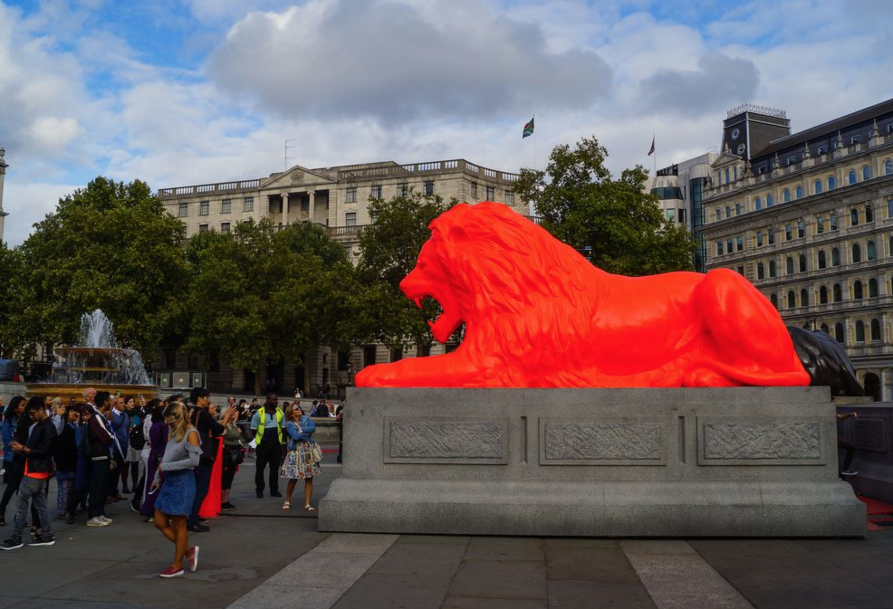 for 2018 London Design Festival that spouts our poetry, Google’s Poetric 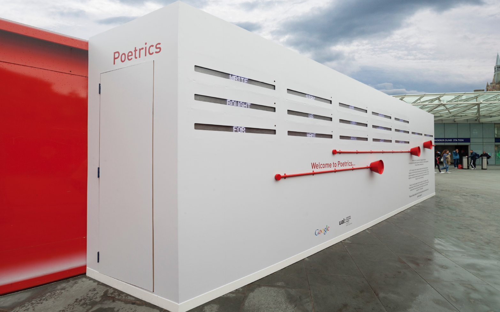 ,a public intervention that uses voice recognition program to stitch passer-by’s conversation into poems. Poetic Design as a name is a graphic design studio, a fictional conference by Karim Rashid, an undergraduate design course at the University of Technology Sydney with an emphasis on the ‘everyday’ (yes again, the word everyday). If we search ‘poetic as a keywords on the design and architecture website Dezeen the list goes on: minimal metallic stationery by Poetic Lab, Demeter Fogarasi’s Poetic Furniture chair “appears to have been blown into shape,” “[The passport design] is very poetic and elegant”.
It does not take long to notice that the usage of poetic in design often has to do with an artefacts aesthetic and material properties, and qualities themselves that evoke such a descriptor tend to be rather uniform — minimalistic in appearance and/or simplicity of forms, often times traditional craft-based material. It is almost always attached to a general sense of positivity and a feeling of elevated spirits. This usage however seems at odds when compared to poetry’s ability to unpack, unfurl, untangle, re-tangle, the lived experiences of its authors in such a way that we could come to embrace the unknown, the vulnerable and the hidden. The ambiguity of poetry is robbed and compressed in to the confined, already established understanding of design. It seems that this superficial way of referring to a formal quality is limiting the potential for a deeper and more nuanced relationship.
It has not always been like this. Delving into the origin of poetry and design, there exists a curious etymological link. The word poetry is derived from a variant of the Greek term, poiesis, which means ‘to make’. In this context, the ‘making’ does not necessarily refer directly to the physical act of making but rather it represents the transformational notion of creation. German philosopher Martin Heidegger refers to poiesis as a “forth-bringing” that is, to bring something into existence that was not there before, to move away from one’s standing and become another. “The blooming of the blossom, the coming-out of a butterfly from a cocoon, the plummeting of a waterfall when the snow begins to melt”. It is a process in which the work reconciles thought with matter and time, a person’s understanding of the world. Through this, we can establish that poetry has a purpose in unpacking, revealing and connecting with others and the world at large. And finally, that such a process is always ongoing.
Design, of course also means to make, to designate, to plot out. But from its Greek roots, it also means to conceptualize, to approximate, a vague or as-of-yet undefined process of genesis. From an archaeological perspective, to design is what sets us apart as a species. Take the Acheulean hand axe ,for example, it is a tool, but it functions equally significantly as an ornament, contributing to the indeterminacy and potentiality of what is possible. It signifies itself as a axe and opens up other new forms of tools. It is a result of imagination and simultaneously a trigger for it. Archaeologists Beatriz Colomina and Mark Wigley describe the action of designing as “to go beyond what is needed, to make something different or differently.”[1] Here the link to design’s Greek roots becomes more visible. An idea that has been conceived, but not put in to action, whether intentionally or not. Rather than a defined act, or action, design becomes a space for the indeterminate, an attempt to give form to elusive thoughts rather than a definitive answer.
Through this link, we can see that both design and poetry were never merely about making new things, they are processes of unsettling or continuing the world. They are both mediums of projection, and engage in some level of manipulation of reality. Perhaps then, it is a sense of openness that is missing from the way we think about poetic design, and design in general. The question of engagement seems to be at play — the quality of how the two mediums function beyond the hands of their creator. Poetry is democratic, what New Critical calls “intentional fallacy” - a poem does not belong to its author, rather, “it is detached from the author at birth and goes about the world beyond his power to intend about it or control it. The poem belongs to the public”[2]. The ownership of the poem lies in the readers’ own interpretation, the way it is consumed, to put it in a designerly term. When a poem is being consumed, a different poem than the one of the author is being articulated in the readers’s mind. Chinese Artist Ai Weiwei once expressed, “to experience poetry is to see over and above reality. It is to discover that which is beyond the physical, to experience another life and another level of feeling”[3]
[Laura Herman] The address here points towards design’s symbolic function, but how is it different from art?
[Pete Fung’s internal voice] What is in question here is the need to constantly define, and harden the border of what is and isn’t design, what is and isn't art. As if the cross contamination of the disciplines, in this case, design going into art is somehow diminishing the authority of design. But why, if we as a society are in desperate need of transdisciplinary collaborations. And further, where does this need for authority come from? An appeal of modestist value and west scientific ideals?
[Pete Fung] I recall a talk by Sarah Lucas and Aliece Rawsthorn for the AA School of Architecture, titled “Is Design an Art?”. Towards the end of the talk, Sarah proclaims the only reason why the likes of Max Lamb and Gabriel A. Maher are designers is because they called themselves so. In which Alice disagrees and goes on to suggest two counter reasons. While I see those two reasons slightly irreverent, I resonate with Alice in calling these work design, and in turn having more dynamic and different people in design.
Over the years of functioning in the conceptual side of design, I have slowly been recognized as more of an artist than a designer through other’s hand. From curators writing my bio as “artists” to gallery issuing me “artist fees”, I always feel the need to correct them. I think it is only through doing the work I do, and calling them design, that we can open up the possibility of what design is. One more person I can convince that my work is design, one more person’s perspective of design expends, and that can only be good for design’s collective diversity and growth as a field.
Design occupies every aspect of our lives, is design then too real to re/create poetry? Rather than seeing design as singular isolated entities or acts, can we see design as fragments that are ambiguous and part of a larger ongoing narrative. That they are continuously evolving, in and out of designers’ hands?
- [1] Are We Human? , Beatriz Colomina and Mark Wigley, 2018
- [2] The intentional Fallacy , W. K. Wimsatt Jr. and M. C. Beardsley, 1946
- [3] Ai Wei Wei Speaks , Hans Ulrich Obrist, 2011
A giant inflatable rubber duck sits at the entrance of the Richmond Night Market in Canada ,an annual event celebrating Hong Kong culture and cuisine. As visitors arrive, they are greeted by this cultural obsession over a mundane house hold item. The story that was not told is that this obsession is actually the work of Dutch artist Florentijn Hofman. Hofman creates enormous inflatable rubber ducks as urban installations across globe. The work gained its popularity when it was floated to Victoria Harbour in Hong Kong  ,and was subsequently adopted as its own cultural artefact for a night market half way around the world. In the process of appropriation, the reference to the artist’s intentionality is lost. But of course, the rubber duck itself is also an iconic cultural artifact of the West that Hofman adopted. The duck’s origin can be traced back to Russian-American sculptor Peter Ganine’s depiction of a duck, which was then later adopted by a rubber manufacture in North America.
,and was subsequently adopted as its own cultural artefact for a night market half way around the world. In the process of appropriation, the reference to the artist’s intentionality is lost. But of course, the rubber duck itself is also an iconic cultural artifact of the West that Hofman adopted. The duck’s origin can be traced back to Russian-American sculptor Peter Ganine’s depiction of a duck, which was then later adopted by a rubber manufacture in North America.
From an artist sculpting an impression of a duck he sees or remembers, to being consumed by over 50 million people world wide, to another artist employing a cultural icon, to a whole nation of people creating a cultural phenomenon, we can see the production of meaning is never an isolated act by a singular individual.
When criticizing ‘decoloniality’ being a empty signifier in design, scholar Ahmed Ansari brings the design’s mode of operation into question, “trying to “solve” coloniality by producing a range of cultural artifacts without trying to change or at the very least, reimagine, the systems within which those artifacts are imagined, produced, distributed, and consumed, is like treating a severely ill person by merely alleviating their symptoms.” [1] In times when designers are stepping into a variety of societal issues with the badge of ‘doing good’, i.e. challenging dysfunctional governance, resolving migration crisis, tackling global warming, decolonizing education, reviving craft, it is vital that we acknowledge and examine our mode of operation carefully. How our actions sits in relation to the world and large, the world beyond the domain of design? How other systems or forces have come to influence the way we operate and how what we do in turn reinforces or supports (props up even) such systems?
This idea is best exemplified in the work Coke Spoon 2 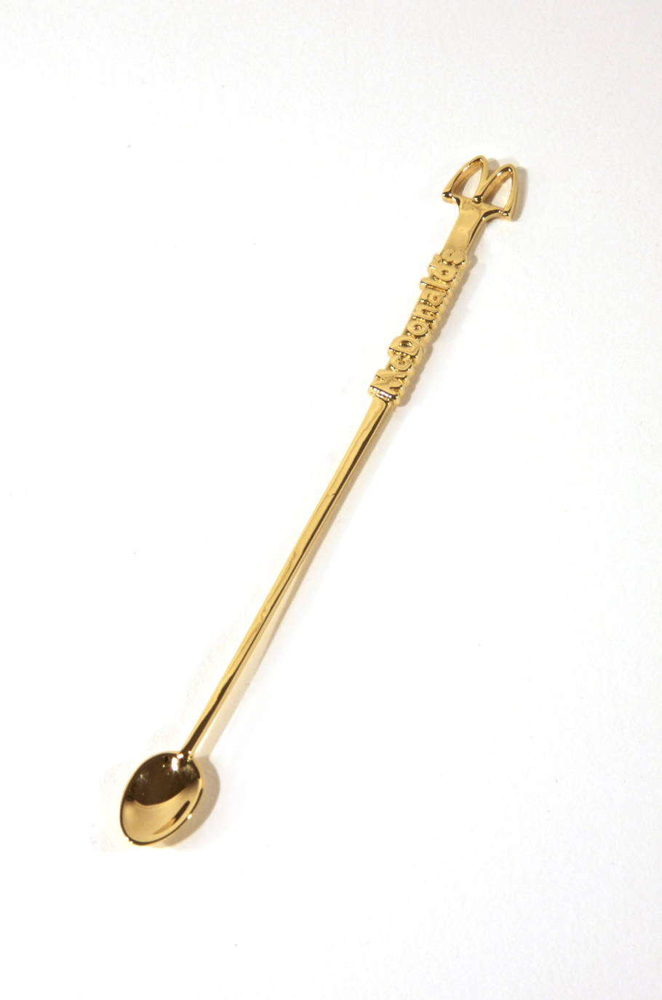 by conceptual artist Tobias Wong; a gold cast replica of McDonald restaurant’s disposable plastic coffee spoons. In the 1970s, the hight of consumer culture in America, McDonalds introduced its plastic stirrer spoon in part to aid their customers in adding sugar and cream to their watery coffee flavoured beverages, and also to help promote the company, thanks to the emblazoned logo at the tip of said artefact. What was not expected by either the multi-national corporation or its designers was how popular the spoon would be among an alternative group: cocaine users. The added functionality was noticed by the company through drug related court cases, and subsequently, the spoon was pulled from the company’s offering. Wong’s recreation in 2005 is a commentary on ”the nature of design, […] the gap between design for mass consumption and design for luxury connoisseurship.” The gold spoon being an appropriation of an appropriation, what is in question here is also who is allowed to create culture as two years later, Wong was sued by McDonalds for trademark infringement.
Then, instead of thinking about what design can do, perhaps we could think of how design can engage as small factions of a larger trajectory, inseparable from the world we live in. A comparison between two drone projects might offer another proposition. The first,Drone Survival Guide by Dutch designer Ruben Pater is a foldable poster depicting the silhouettes of the 27 best known military drones employed around by State actors from around the globe. 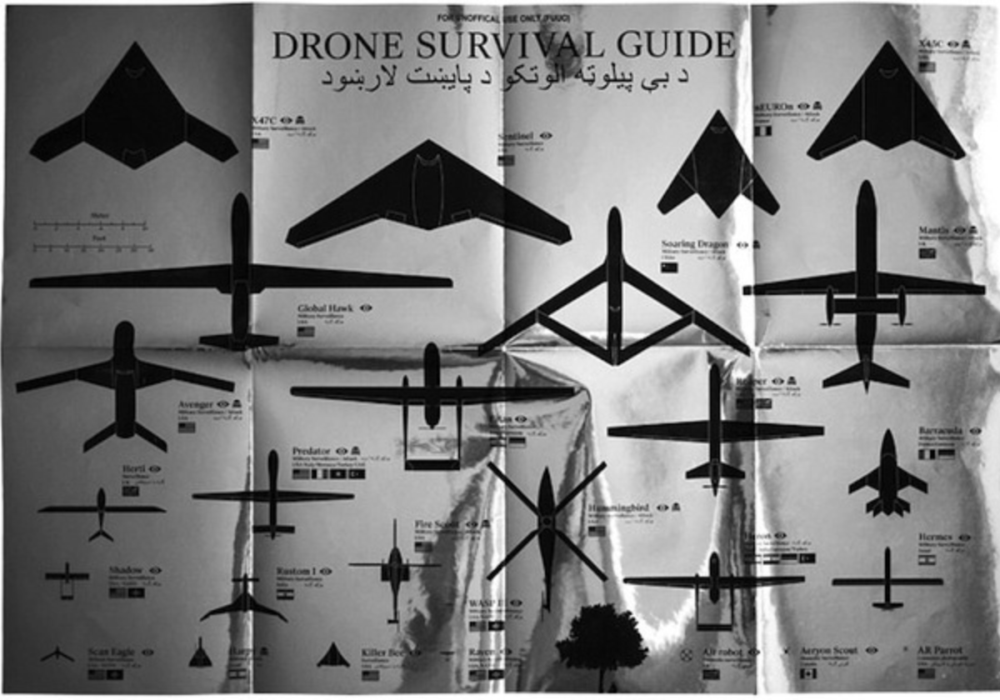 Printed on metallic coated paper to reflect the sun towards these omni-present drones’ surveillance cameras, the poster is open sourced and available to be downloaded by anything who has access to the internet. The second, Drone Shadows by British artist and author James Bridle are public installations of one to one scale outlines of military drones painted on various city street around the world. 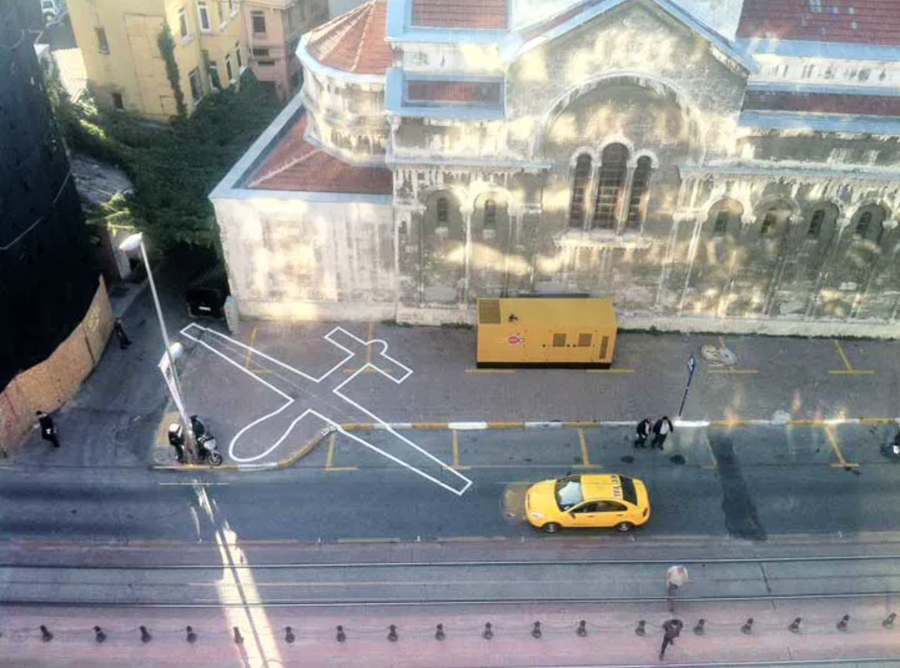
[Samein Shamsher] Another way of examining this idea could be the kinds of worlds that design continues to reproduce, but that no longer align with our contemporary culture or societal narratives? An example might be something as simple as the five piece dinette set which consists of a set of four chairs and a table for dining. Individually the pieces may be innocuous but together they suggest a particular type of social relations, that of the post-war nuclear family (and all of the ideals and values associated with it), one that seems more and more removed from the reality that many people experience today.
[Pete Fung] Conceptual artist Fred Wilson's work Whipping Post and Chair’ comes to mind. While all the artifacts are from the same museum collection, by positioning the Americana chairs in observational distance to the whipping post the artist displays and intensifies the political power dynamic in-between. The work renders the inherent (yet invisible) visible. What is interesting here is the method of the work - there is nothing new here. It is merely an arrangement of existing objects, you can also say it is a form of curating. It begs the question then, do we need new things to communicate already existing power structures - think of Anna Aagaard Jensen’s A Basic Instinct, a provocative series of chairs that mocks the ’manspreading’ pose. Do we need a new chair to illustrate the issues we are addressing? Or can we simply enact the politics as it exists in people’s live experience.
While both projects seek to address issues surrounding airspace, privacy, surveillance and seem identical in the target of their critique, the way that they are executed places them miles apart. Each practitioners’ positionality and mode of engagement is key. Open source is democratic in theory, but in practice, only people who were interested in drones or designers (or at the very least, people who were searching for them) will find the field guide. Not to mention there is also a sense of sensitization in the act of searching. While the field guide is humorous it is also conformable. The distance to the topic remains distant, we look down at a printed page unable to ascertain a true sense of scale how such forces impinge directly upon our own private worlds. Oon the other hand, Bridle’s drawings are encountered by thousands of citizens at their least expected place and time — interruptively bringing these seemly out of grasp issues into a personal relational experience. It is not merely a question of attendance and participation, context of the engagements matter. A workshop designed to look at the surveillance issue attended by a group of highly educated gallerists and cultural practitioners who are already familiar with the subject has a very different impact than if it were attended by a group who are not, what British designer and educator Bahbak Hashemi-Nezhad called 'defamiliariztion’.
Secondly, there is a certain authority that comes with design. It is difficult to find the Drone Survival Guide without knowing that it is Ruben Pater’s project, who is known for his research into the politics of design (and for being the author of the book with the same title).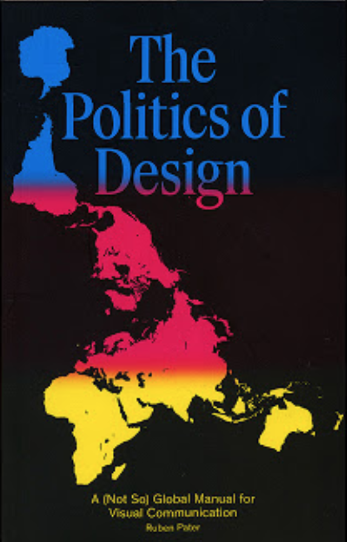 The bias and criticality that comes with his position is imposed on to the reader through the guide. A passerby who come across Bridle’s drawing on the street would not even know it was done by a well-known artist. The social hierarchy of the creator as artist is muted and the ‘audience’ is given the agency to explore their own positions in relation to the issue. In another sense, Bridle doesn’t present the work as the expert.
The differences are subtile but they are critical. One positions the design as an outsider observing and illustrating the world where the other acknowledges that design is part of the world and seeks to engage with it at its sometimes truly terrifying scale.
- [1] The Work of Design in the Age of Cultural Simulation, or, Decoloniality as Empty Signifier in Design, Ahmed Ansari, 2017
Epistemology is, among other things in its varied history, the study of knowledge — how we come to know what we think we know. To help elucidate his definition of epistemology Plato drew The Definition of Knowledge 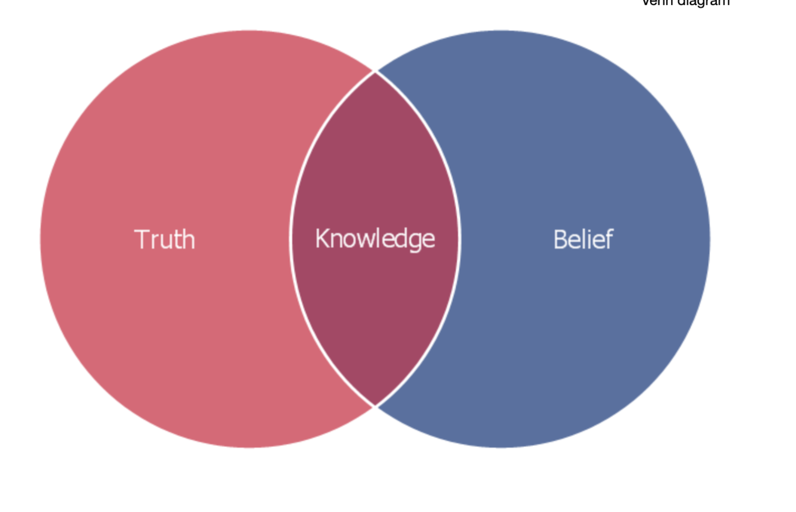 in the 5th century. The circle containing the word ‘Truth’ means absolute truth, and when combined with an individual’s ‘Belief’ produces ‘Knowledge’. Fast forward to 2019, some 1500 years later, and we find a similar attempt to define the boundaries of these worlds in a political cartoon by Avi Steinberg 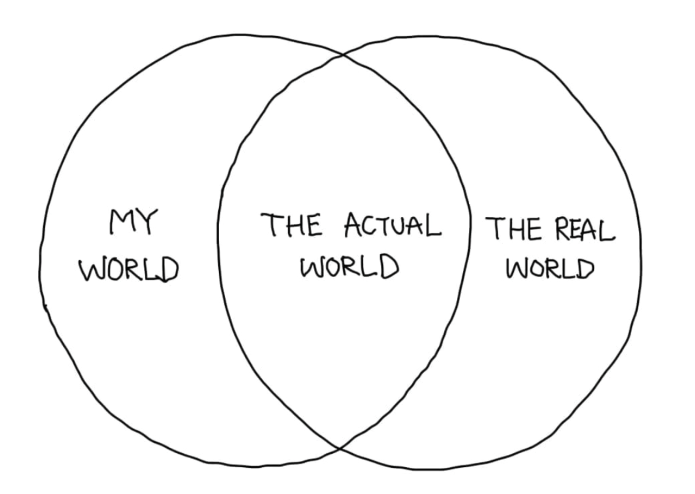 ,initially published in the New York Times and subsequently popularized on Instagram. ‘The Real World’ as it is, filtered through ‘My [perspective of the] World', produces the 'The Actual World’ as we would experience and come to understand it.
What is interesting here is not necessarily the resemblance between these two illustrations but rather, if we shrink down Plato’s Definition of Knowledge, such that it becomes positioned within Steinberg’s cartoon today. Plato being Plato, the founder of the first institution of higher learning in the Western World, his work could easily be regarded as ‘The Real World’, the ‘Truth’. 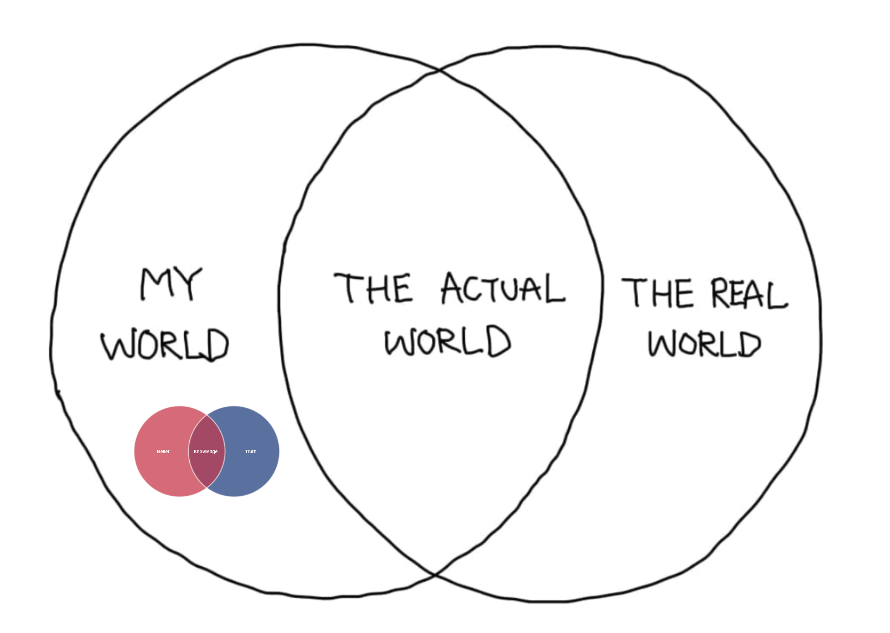 Except, it is not. It is not to say Plato isn’t correct, but rather that his diagram should now be viewed as “Belief”, his belief in particular. It is only if we thinks through and draw up our own interpretation based on his view, that it becomes our own ‘World,' our ‘Belief’.
Through this, we can establish that there are two kind of knowledges. First the one defined as ‘expert knowledge’, the kind of institutional knowledge that is generated and endorsed by formal disciplines, the sciences, academics and related professions. Secondly, there is the knowledge of the personal, the experiential. The latter is also what Indian-American anthropologist Arjun Appadurai proposes as a right to research. “All human beings are, in [a] sense, researchers, since all human beings make decisions that require them to make systematic forays beyond their current knowledge horizons”. [1] By shifting research from a professional activity to a right, Appadurai argues that individual exploration and discovery, whether it has relevance to others, is no less, if not more important than knowledge that is directly taught and imposed upon said individual through or by an institution. As our planet becomes yet more global and interconnected, not being informed of the structures and systems in place that profoundly influence our lives means we are not exercising full citizenship. The democratization of personal inquiries also mirrors Joseph Beuys’ belief that everyone is an artist, and that, “society as a whole is to be regarded as one great work of art, to which each person can contribute creatively”.
So what is the epistemology of design? How does design today come to make sense of the world and in turn engage others to make sense of the world? American–Israeli designer Neri Oxman’s Krebs Cycle of Creativity 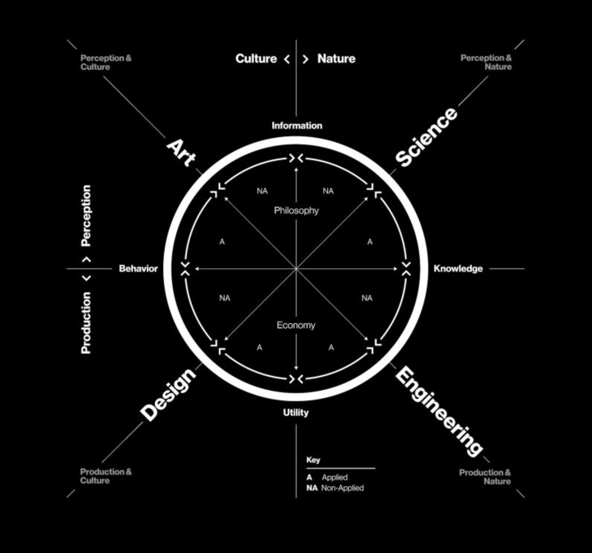 provides an answer in the form of another illustration, this time a map of four domains of creative exploration—Science, Engineering, Design and Art. According to Oxman, Design operates in-between Behaviour and Utility, and deals with production and culture. While it is true that design encompasses almost every part of our lives, thanks to its coupling up with industrial processes and manufacturing needs during the industrial revolution, there has also been a movement for design to shift away from being a solely a technical discipline in to one that acknowledges its undeniable status as a producer and distributor of culture.
At the opening of GEO—DESIGN: Junk. All That Is Solid Melts into Trash 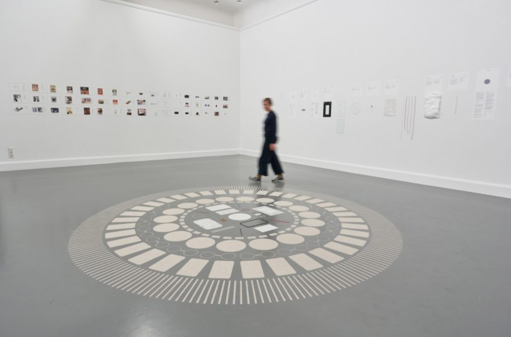at the Van Abbe Museum in Eindhoven, curator Martina Muzi introduces the participating designers by saying, “They have researched the topics for months, and they have become experts and that we can believe what we see [in the exhibition]”. This is a curious notion. The work in the exhibition feels conclusive and provides a sense of authority, and that as Muzi states, should be “believed”. But if we unpack the statement further, it seems to suggest that research is something that happen before design, and that design is the end point of research. Furthermore, what forms has this research take that has allowed these designers to become experts, and of what? The mode of engagement is also in question. When we encounter art in an exhibition, it is clear that the works are the artists’ interpretation of a particular matter. As the audiences, we have the choice to agree or disagree with them. With design, it is presented as if they were the definitive answers to all things. Here, design remains still as a service discipline to another ‘expert knowledge’ — one for the production, or at worst translation, of ‘expert knowledge’.
We are not artists, we are not investigative journalists, we are not scientists. We do not need to pretend to work with “expert knowledge" to legitimatize the creation of our own bases of knowledge. It is almost as if we have forgotten about utility, forgotten how to engage people. Modernest architects spend years studying the human behaviours to ensure a chair is conformable for its users. At the GEO—DESIGN exhibition, design is merely relying on the affordance of the gallery space - abstracting the ‘general public’ as a standardized group or audience that we are superior to and presenting them with our ‘research’.
Pip Mothersill points out “there is no single design solution, only design rationale.” What’s known to be design is one suitable narrative to justify the decisions made during the process of being, and the non-section of the alternatives. [2] This mirrors Gaston Bachelard ideas of epistemological obstacle - “the multiple obstacles that had to be negated or transcended dialectically—and thus absorbed—in the process of arriving at more rational levels of knowledge.” [3]
Perhaps then the first step to understand what design is and what kind of knowledge it is truly capable in creating is not to evaluate it through the measurement of different kinds of knowledges nor is it to filter it throughs the lenses of various different academic languages (fully aware of the hypocrisy here). We could begin by looking into the cracks for the neglected ‘left overs’ — the forgotten prototypes in the studio, the scraps on the cutting room floor, the dusty sketch books. It is only through exploring the messy openings that we can truly establish design as an epistemological discipline, shifting it from the static facts of making, awareness and re-representation, to performative acts of experimental knowledge creation and working through.
- [1] The Right to Research , Arjun Appadurai, 2006
- [2] Inviting Feedback, Pip Mothersill , 2008
- [3] The Poetics of Space by Gaston Bachelard , Joan Ockman, Harvard Design Magazine
As a designer, I have been educated about a range of specializations; industrial design, human-centered design, interaction design, speculative design to name a few. Each sector of design provides a general clarity in its purpose and intention but the accumulating sub-categories also have confusing overlaps. I find it overwhelming at times to navigate the world via all the fields of "designed designs", let alone pick any one to call my "practice"; design that serves industry, design that serves technology, design that serves alternatives to design. Why do we desire from design? Regardless of any impacts or impressions any certain type of design leaves on us, the practice of humans imposing roles for design that are ultimately self-serving, is a prevalent and common model through our histories. The ways that I currently relate to design are informed by these models because I see and acknowledge them most in the "everyday(s)" most accessible to me. Recognizing; the system, the world, the policy, the space, the situation, is critical to understanding design but equally urgent to me is recognizing the undefined or defineless interactions with design beyond my expectations. I want to understand if design exists at all outside the world I designed it into.
Design is notably theorized as well as criticized as being either a thing that makes other things better (objects, systems, space) or a thing (objectifying design) that should be made better itself. This underlying goal is restated regularly in the guise of new keywords and terms to propel academic and capitalist interests. It's like releasing the new version of a smartphone and as a designer I feel pressured to keep up, but I'm tired of reading through essays and articles regurgitating new design trends, methods and policies, all better than the last. I won't discuss here how much of design is; capitalist, socially oppressive and exclusionary, environmentally ignorant and just generally fucked up. But, these are some reasons why design makes me uncomfortable and further it makes me uncomfortable to call myself a designer at all. So let's just say I am not a designer! I am still very interested in how Design and I exist in the same world and how we exist outside other's control.
Does design exist and evolve on its own? Perhaps not, sure. But i'd say design manifests itself in our realities and doesn't stop manifesting after a designer or author releases it (it's not the end product or solution), if anything it starts. Whether we recognize design as; an idea, an artifact, a story, a space, a line of code or an interaction, it's easier to understand design if one knows how to identify it and perhaps respond to it (like other existing things). Regardless of who or what creates "design" in our worlds, we can recognize that design exists and also can respond to its environment. Like a chain wearing down the gears on a bike or a bug in a computer disrupting a function, this evidence holds room for further interactions but design has historically deemed this evidence as problems or mistakes. I find this quite beautiful as misinterpretations or miscommunication can force us to analyze the ways that we encounter, relate to, empathize and interact with others. *Others including: humans, non humans and maybe even design.
Though dating apps are professionally designed to be used in a standardized way and might be a counter example to much of what I have written I wonder what formats could help expand my "encounters" with design and open a line of communication of sorts...
Nova
Non-designer looking for experience
Age 25 | km/~ close by ;)
Looking for designs that I can relate with! Open to the form of
relationship (eg; romantic, sexual, platonic, professional..)
but want to find what works best for us. To be honest I am tired
of having control over most design (I'm more of a sub anyway)
I don't want to be ignorant of your desires anymore and think
we can explore what our roles are together.
Perhaps we can find new ways to access each other? Or maybe
this time you can do the user testing… not sure -- but if you
are just looking for a regular "optimized solution" and only
want to play by the "design guidelines", I'm not interested in
you!
But maybe if you are curious ...
we could just fuck the term "design"
and go from there ;)
As much as formal design oppresses our lives and everyday, we oppress design through formalities that become ingrained in our everyday norms and expectations. Recognizing and acting apart from systemic structures imposed on our bodies and our worlds will likely take on many forms. There is no one human and there is no one design. Working to open up to forms of design, whether; autonomous, transitioning, changing, by-product, unrecognizable or other as valid design and design that exists outside of a person's/peoples authorship and imposed functions is critical to understanding different possible realities. This is not a new type of design or a new method, if anything it is just a way of being or maybe... being curious.
Dear Alice,
I hope this letter finds you well under these unusual (soon-to-be-the-usual) circumstances. I myself am not doing so well, as I find myself feeling perplexed about the role of design in this moment.
As you are a writer and public advocate for design whom I have long admired, I am reaching out to you in the hope that together, we could investigate the ways through which we come to understand design, as both a practice and as the way we project ourselves into the world.
Like many others, I find myself within the boundaries of a country in lockdown. Unlike many others, this has left me stationed in the relative comforts of my bedroom and looking out at the world through the pixels of my screens. As a designer, my professional curiosity naturally has me wondering what design can do under the current circumstances. And, perhaps more importantly, as a concerned global citizen I can’t help but think that the pandemic is not about design at all.
Since March, cultural institutions, galleries and studios have been quick to respond to this neverending crisis with the familiar refrains of: ‘The designer reimagines this artefact and that system for a post-coronavirus world’; or ‘Design contributes to solving the pandemic’; and, of course, “Let’s rise up to the challenge and reinvent ourselves as designers’. While thus far these sentiments have been optimistic - even opportunistic at times - their sentiments reflect strangely under the light of a global pandemic. As we seem unable to remove ourselves from the myopic, solutionist role so often attributed to the profession of design. We are fixated on what solutions our discipline can provide, when clearly there is something far greater happening outside our bedrooms-cum-studios, all while a more democratic, collective form of design activities by citizens emerges. If we are not needed now, perhaps then we were never needed at all? At least in the current modes we are practicing design anyway. In this line of thinking, what this crisis has revealed is design itself having an identity crisis.
What has been disconcerting for me then, is not only our fixation on design but also design’s fixed-ness - the way we have come to understand design and in turn its totalizing effect in rendering out other possible readings of design and the different modes that design could function as and in. Typecast as a band aid solution, design seems anemic when confronted with the truly gargantuan wounds stretching across our worlds.
How we structure our stories matters. Poet Mourid Barghouti writes that if you want to blur a certain truth, simply cut out what happened first and start the story with ‘secondly’. By placing the current pandemic situation first, and design second, we have a story of how design has improved the situation. Design is routinely cast as the protagonist who descends into the midst of tragedies to save the day. To unpack an example from your own Design in the Pandemic series - the homeless at Cashman Center in Las Vegas portrayed as “the saddest and most memorable [visible legacy of social distancing].” Design represented here could be interpreted as the social distancing measures provided for a vulnerable population. But what if we start with calling them people rather than homeless, or those millions now unemployed due to the massive job losses and are unable to pay rent? Or start with the passing of the camping ban brought into law just a few months before the pandemic, making it illegal to sleep on the street? Or the lack of social impact criteria in urban development and permit processes? By shifting the starting point of the story, we are quickly reminded of, not what design has done, but what design failed to do.
Furthermore, the position from which we tell (and more crucially, don’t tell) our story also matters. As the first guest on Design Emergency, Michael Murphy spoke about the idea that there is no apolitical architecture: by its very existence in the physical world, architecture, even in its passivity, is a political act, because consciously or not, it reinforces certain social, cultural, technical, or economic values. Other forms of design are no exception. Another example from the Design in the Pandemic series that highlights this fact is the China Aid logo. In your description of this design, the Intricate and complex international politics are being presented from a seemingly neutral and objective position. Design is being referenced as an almost distanced agent, obscured from its other multifaceted roles and responsibilities in this diplomatic maneuver. Design’s contribution to consumer culture has as much to answer for in resulting in our heavy reliance of China for its manufacturing of cheap goods, our personal-protective-equipment among them. Or the red cross logo, originating from the inverse of the Swiss flag, being projected as an “international” symbol of aid is just another example of design and nationality from a different time. We are every step of the way in human history and are disparate from the tangled web of contemporary existence. By extending our focal point of the story beyond the isolated aesthetic and political elements, we make visible the other intended and unintended consequences design (ours, the Western one) contributed in creating this moment of political intervention.
This is not to say that design can’t serve anything outside of the political narrative it so often falls into. Far from it. I feel that if design truly is an attitude, perhaps more than ever, it is not to be the agency to change but rather, to provide the agency to change.I am sending this letter in the hope that it may form the beginning of a conversation. In uncertain times like these, what we need are not more singular renderings of design solutions, but to see design as tools to come to grips with just how inherently complex things are, and in turn, allow us all to act as politically engaged global citizens.
All the best, stay safe, and I look forward to speaking with you soon.
Warmly,
Pete